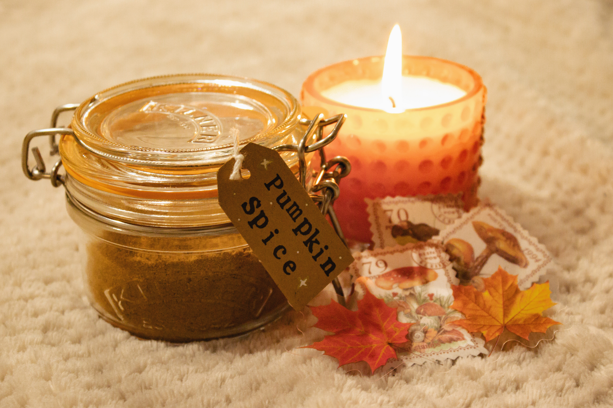

Homemade Pumpkin Spice Mix

A super easy pumpkin spice mix that you can add to just about anything!
In my household, pumpkin spice season is every season.
I use this spice mix for so many different things:
Ingredients
- 3 tbsp. ground cinnamon (I used sweet ground cinnamon)
- 2 tsp. ground ginger
- 2 tsp. nutmeg
- 1 1/2 tsp. ground allspice
- 1 1/2 tsp. ground cloves
Method
- Mix together all the spices listed above.
- That's it. That's literally it.
It's as easy as that! I added mine to a cute mason jar and created a custom label to remind myself what I put in it.
I totally recommend creating your own spice mixes!